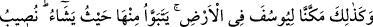
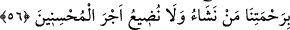
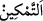

Ey insaf sahibi! İşte dünya onları Allah’tan meşgul etmedi. İç ve dış organlarını Allah
Teâlâ’nın hizmetinde kullandılar.
Burada ehl-i işârete göre: Kalb Yûsuf’u ruh kralına şöyle dedi: “Beni cesed ülkesinin
hazînelerine tâyin et.” Çünkü cesedin iç ve dış organlarından her biri için Allah’ın kahır
ve lütuf hazinelerinden biri vardır. Her hazinede de bir başka nimet mevcuddur.
Meselâ gözde görme nimeti vardır. Şâyet insan bu nimeti Allah’ın âyet ve
mârifetlerini görmek için kullanırsa lütuf hazinesini bulmuş ve ondan faydalanmış olur.
Ama bu nimeti gözle elde edilen lezzetler için, nefsin şehvetleri için kullanırsa ve
kendini bundan korumazsa kahır hazînesini bulmuş olur. Bu da kendisine zarar verir.
Diğer organları da bu misâle kıyas et.
İşte Yûsuf, bu sebeple şöyle diyor: “Çünkü ben çok iyi korurum ve bu işi bilirim,
dedi.” Yani nefsimi ona zarar verecek şeylerden korur; nefsimin faydasına ve zararına
olan şeyleri, nefsimi faydalı ve zararlı işlerde nasıl kullanacağımı bilirim.
56. Ve böylece Yûsuf’a orada dilediği gibi hareket etmek üzere ülke içinde yetki
verdik. Biz dilediğimiz kimseye rahmetimizi eriştiririz. Ve güzel davrananların
mükâfatını zâyi etmeyiz.
“Ve böylece Yûsuf ’a orada dilediği gibi hareket etmek” Mısır’ın dilediği şehrinde
konaklamak, dilediği yeri konak edinebilmek “üzere ülke içinde yetki verdik.”
“Ve böylece” sözü, Allah Teâla’nın Yûsuf (a.s.)’a ihsân ettiği zindan sıkıntılarından
kurtarma ve Kral Reyyân’ın kendisini özel dost edinmesi nimetlerine işaret etmektedir.
Yani onu zindan sıkıntılarından kurtarıp krala özel dost yaparak Mısır ülkesinde bir yer
sahibi kıldık.
O günkü Mısır, el-İrşâd’da belirtildiğine göre 40x40 fersah (yaklaşık 102.400 km2)
genişliğindeydi.
el-Medârik’te şöyle denilir: “
”, güç kudret vermek demektir.
Bu ifade Yûsuf (a.s.)’ın Mısır üzerindeki tasarruf gücünün kemâlini ve bir kimse
kendi evinde dilediği gibi tasarrufta bulunduğu gibi onun da Mısır’da sanki kendi
eviymiş gibi tasarrufta bulunup otoritesi altına girdiğini ortaya koymaktadır.
Bir hadiste şöyle buyrulmuştur: “Allah kardeşim Yûsuf ’a rahmet eylesin. Şâyet:
“Beni ülkenin hazinelerine tâyin et.” demeseydi, kral onu hemen bu işle
görevlendirecekti, oysa böyle dediği için bir sene geciktirdi.”[58]
İbn Abbas (r.anhümâ)’nın şöyle dediği rivâyet edilir: “Yûsuf’un vezirlik işini
istemesinin üzerinden bir yıl geçince kral onu dâvet edip teveccüh gösterdi. Mührünü